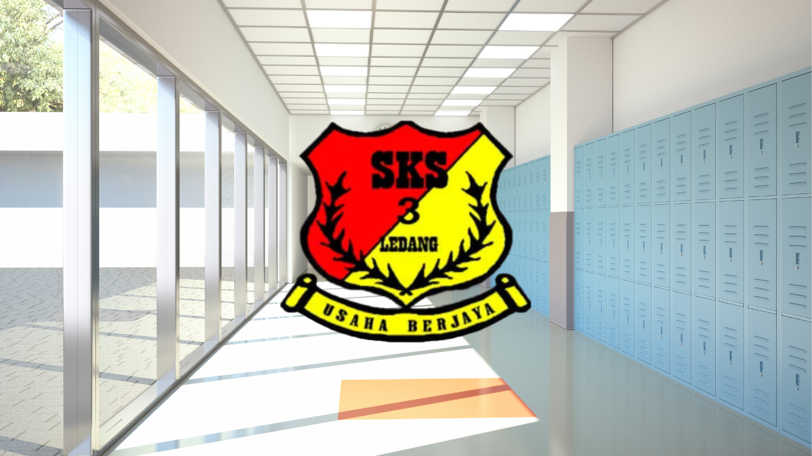
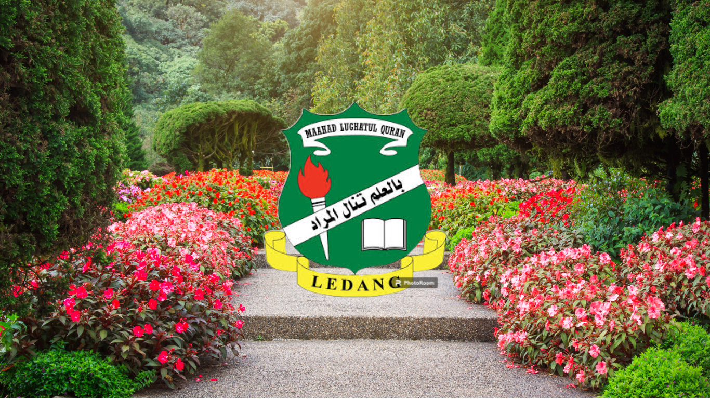
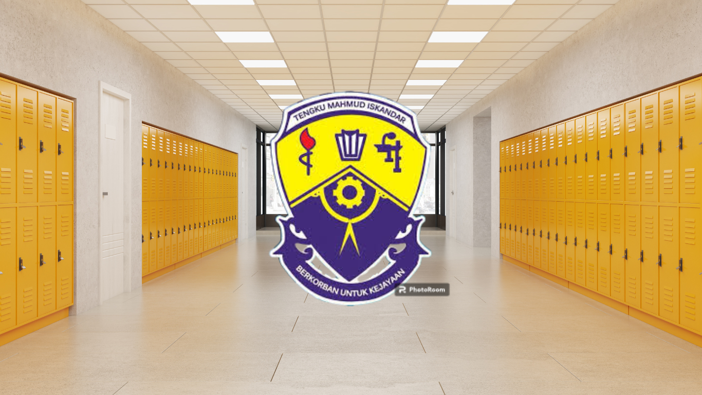

˚ʚ♡ɞ˚MY EDUCATION JOURNEY˚ʚ♡ɞ˚
Elementary Education: SK Serom 3
- Attended from age 7 to 12
- Discovered the joy of learning new subjects
- Participated in school events and activities
- Developed a love for learning through dedicated teachers and a vibrant school community
- Fostered values of perseverance, teamwork, and creativity
- Broadened horizons through class projects, sports days, and cultural celebrations
- Built confidence and resilience with support from teachers and peers
- Achieved the UPSR milestone at age 12


Secondary Education: SMA Lughatul Quran
- Attended from age 13 to 16
- Embraced a challenging academic environment
- Thrived in a boarding school setting, living at the hostel for two weeks at a time.
- DCultivated lasting friendships and a supportive community at the hostel.
- Enhanced time management skills because we learned to balance academics with the unique schedule of a boarding school.
- Experienced personal growth
- Faced challenges and fostered independence through a structured boarding school experience.
Secondary Education: SMK Tengku Mahmud Iskandar
- Attended from age 17
- Transferred to pursue my love for art at SMK Tengku Mahmud Iskandar to pursue my passion
- Formed lasting friendships and discovered a supportive and kind student body.
- Achieved an A+ in Art, a testament to my dedication and the school's excellent program.
- Created some of my most cherished high school experiences at SMK Tengku Mahmud Iskandar.
- Empowering decision
- The transfer to SMK Tengku Mahmud Iskandar was pivotal in allowing me to explore my passion and create lasting memories.

Tertiary Education: Universiti Teknologi MARA (UiTM)
- Currently pursuing a degree in Library Informatics at UiTM.
- Thriving in the Library Informatics program at UiTM, equipping myself with the skills to manage and organize information effectively.
- Looking forward to applying my knowledge of Library Informatics to enhance the future of libraries.
- Balancing studies and personal growth by learning to navigate the demands of university life while fostering personal and professional development at UiTM.
- Contributing to the vibrant UiTM community